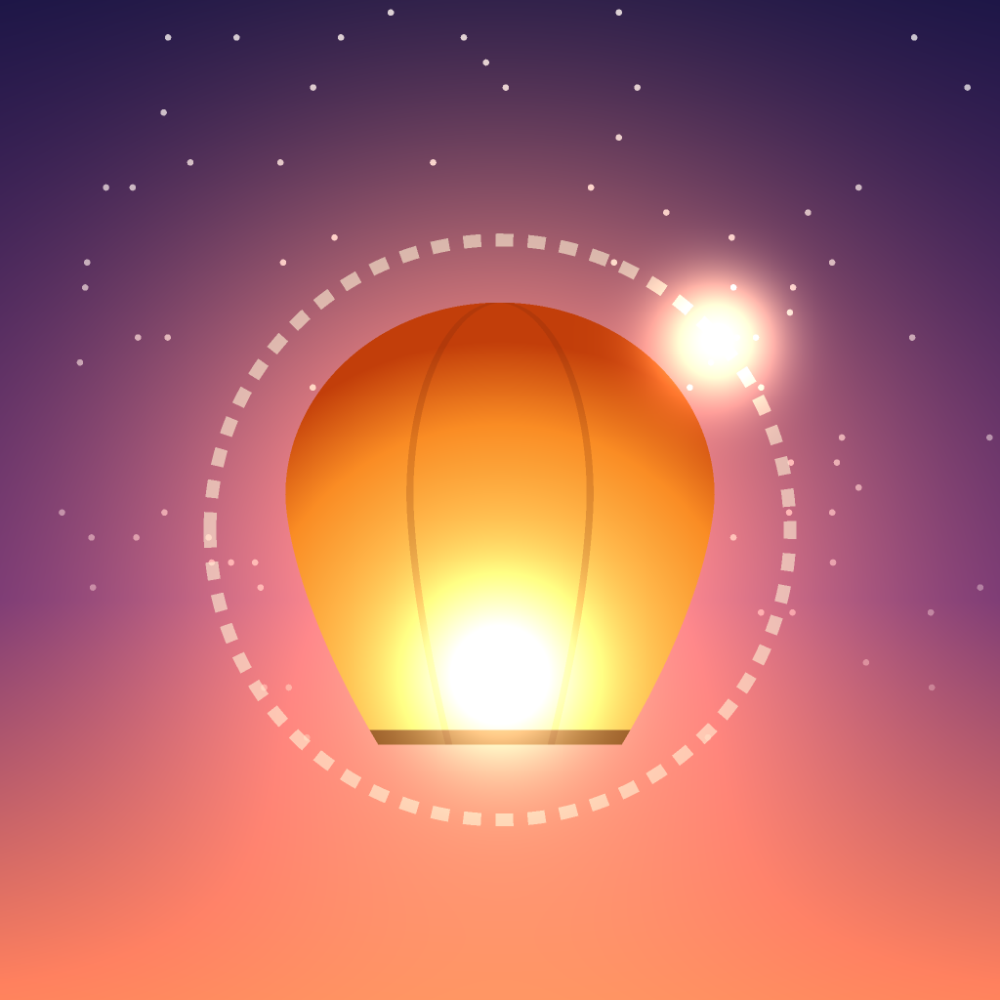

Lumo HopSupport
Get in touch
Found a bug or have an idea? Open a request and we will answer there.
Open a support requestHow to play
- The firefly circles a lantern. Tap anywhere to let it fly in a straight line.
- Catch another lantern to land on it. Miss, and its light fades out.
- After your first hop, every lantern slowly burns down. Do not wait too long.
- Hop fast to build a combo up to ×5. Skipping a lantern and catching stars give bonus points.
- New firefly colors unlock at best scores of 15, 40, 90 and 160.
Common questions
- No sound? Check the speaker button in the top corner and your phone's silent switch.
- Lost my best score? Scores live only on your device, so deleting the app clears them.
תמיכה
מצאת תקלה או שיש לך רעיון? אפשר לפתוח פנייה בכפתור למעלה. איך משחקים: הגחלילית מסתובבת סביב פנס, נגיעה במסך משחררת אותה בקו ישר, ותופסים את הפנס הבא. אחרי הקפיצה הראשונה כל פנס נשרף לאט. קפיצות מהירות בונות רצף עד ×5. צבעי גחלילית חדשים נפתחים בשיאים 15, 40, 90 ו-160.